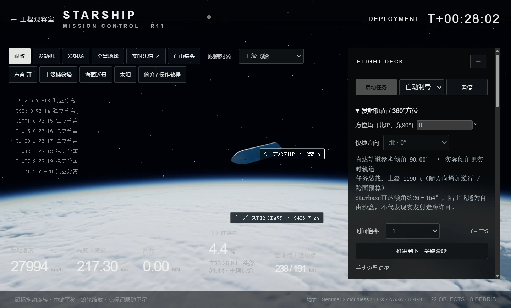

进入精密结构
星舰、助推器、猛禽与星链。选件、拆解、透明观察，查看推进剂与发动机工作。
WEB & WINDOWS · R12
近看一枚发动机的内部，
再亲手把星舰送向太空。
免费下载 · 完整解压约 839 MB · 无需密码或密钥
Windows 10 / 11 x64 · WebView2 · 支持 WebGL2 的显卡

星舰、助推器、猛禽与星链。选件、拆解、透明观察，查看推进剂与发动机工作。
选择发射方向，自动观看任务，或控制发动机、节流、矢量与姿态。观察分离、入轨与返回。
部署卫星，规划和执行轨道机动。保存稳定轨道任务，两级返回后可补给并再次发射。
下载 ZIP 后解压整个文件夹。玩家不需要输入密码。
打开 Starship Flight Lab.exe。不需要浏览器标签、Node 或 Python。若系统提示缺少 WebView2，请安装微软官方运行环境 ↗。
工程观察室：左键旋转、中键平移、滚轮缩放。任务模拟：先选方位，再点“启动任务”。“推进到下一关键阶段”可加速观看。
顶部“简介 / 操作教程”可随时打开。F11 全屏；稳定在轨后可保存。旧网页版存档可导出后导入软件。
这是独立制作的航天模拟作品，非 SpaceX 官方软件。真实尺度地球、有限推力与轨道运动由计算产生；未公开的内部结构、性能参数、上级塔架回收等采用明确标注的工程近似。首次加载、运行帧率取决于电脑配置和观察视角。
支持在线试玩和 Windows 下载。推荐使用最新 Edge / Chrome 与支持 WebGL2 的电脑显卡。首次加载精密模型需要一定时间。第三方组件与素材的原许可、影像署名和模拟边界均随包保留。
查看发行说明与 SHA256 校验值 ↗